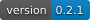

GAWorld¶
GAWorld 是生成式多智能体社会仿真平台。研究者可以创建城市与居民，设置事件和政策，观察个体行动、社会关系与群体变化，并通过控制台、命令行和 Python API 组织实验。

研究背景与平台定位¶
社会仿真把个体行为、社会关系与环境条件放进同一个可运行系统。GAWorld 使用语言模型生成居民的感知、计划、行动与反思，同时记录记忆、状态、位置和经济活动。研究者可以回到具体居民的经历，检查一次群体变化由哪些行动和事件构成。
GAWorld 以城市、居民和世界组织仿真。城市保存地图、环境与初始人口；世界承载运行配置和结果。居民具有身份、人格、记忆、家庭与社会关系，按照日程在环境中行动。真实地图和自定义城市支持不同空间条件，按日、月、年的快进模式支持不同时间尺度。
研究工作台将想法或论文整理为实验方案，再生成预注册协议、运行平行世界并汇总结果。平行世界从共同基线设置不同事件，按种子比较配对指标。研究者在运行前确定条件和预测，在运行后结合数据、轨迹与访谈解释结果。
核心特性¶
居民与记忆：组织人物档案、大五人格、目标、日程和经历，让历史状态参与后续决策。
城市与环境：从地名创建城市，使用真实道路或程序化地图，并配置天气、空间和环境事件。
社会与经济：观察家庭、社交网络、收支、财富与宏观状态之间的联系。
技能与工作：为居民挂载可复用技能，并通过任务队列与适配器执行工作。
实验与干预：设置事件和政策，运行平行世界，比较配对结果及跨种子重复。
回放与分析：查看运行日志、居民轨迹、状态历史、访谈和结构化结果。
多种访问方式：通过网页控制台、CLI、HTTP API 和 Python 客户端操作同一套功能。
插件扩展：通过事件总线、认知管线和插件注册机制扩展仿真。
安装¶
python -m pip install "git+https://github.com/wuchaozju/GAWorld.git@main"
系统要求、源码安装和升级步骤见 安装。
快速开始¶
gaworld init ./my-world
cd my-world
gaworld dashboard
打开 http://127.0.0.1:8766，配置模型后即可开始第一次仿真。完整步骤见 快速入门。
文档¶
入门指南:
开发者指南:
链接¶
搜索¶
使用左侧搜索框，或进入 搜索页面。